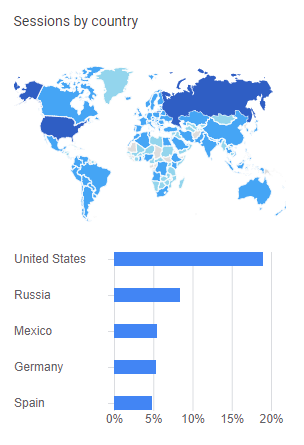
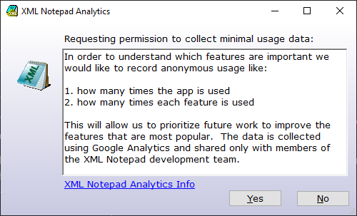

Analytics#
To understand which features are important, XML Notepad records anonymous usage data, like:
- The number of times the app is used.
- The number of times each feature is used (options, xslt, search, etc)
The data is collected using Google Analytics and shared solely with members of the XML Notepad development team. It's used to prioritize future enhancements.
As a sneak peek, here is a map illustrating the countries where XML Notepad was used in July 2022. This vibrant user community is a strong motivator for the team to continually refine XML Notepad.

Here's some raw data from August 2022 to August 2023:
| Action | Counts | Description |
|---|---|---|
| /App/Launch | 1,082,553 | Times app was launched |
| /App/XsltView | 140,703 | Times XSLT view was used |
| /App/FormSearch | 83,020 | Times the Search dialog was used |
| /App/FormOptions | 4,448 | Times the Options dialog was used |
| /XmlNotepad/ | 208,520 | Visits to the web home page |
| /XmlNotepad/install/ | 78,812 | Visits to the install page |
The first time you install XML Notepad on your computer you will be prompted with the following dialog:

We appreciate those who allow analytics to be collected; significantly aids in understanding usage patterns and
prioritizing improvements. However, if you prefer not to participate, click No then your preference will be written to
the XML Notepad settings file, and the prompt will not reappear. You can enable or disable analytics at any time using the
Allow analytics option in the Options dialog.
For enterprise-wide distributions or pre-installation customization, you can set the following environment variable system-wide on the end user's machine:
set XML_NOTEPAD_DISABLE_ANALYTICS=1
Additionally, you can disable the Analytics UI option from appearing in the Options dialog by setting the
AnalyticsClientId to disabled in the default XmlNotepad.settings file as follows:
<Settings>
<AnalyticsClientId>disabled</AnalyticsClientId>
<AllowAnalytics>False</AllowAnalytics>
</Settings>
This ensures that users cannot enable analytics after starting XML Notepad.